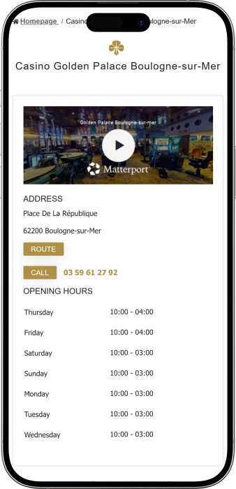
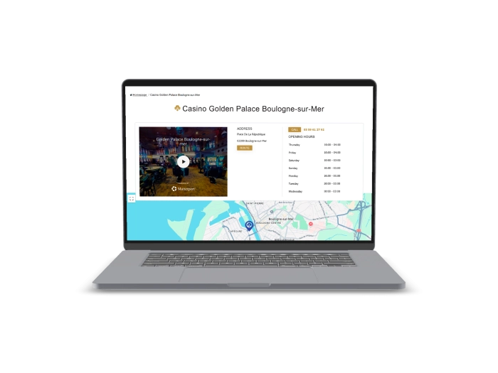

Offre de bienvenue exclusive de
Offre de bienvenue exclusive de
Votre Casino de Référence à Boulogne-sur-Mer
Top casinos
Détails du bonus
Casino
Bonus
Note
Tours gratuits
Plus d'infos
Obtenir
Avantages
- Bienvenue au Casino Golden Palace de Boulogne-sur-Mer, l'établissement de jeux incontournable du Pas-de-Calais. Nous vous accueillons dans un cadre sécurisé, agréé et accessible à tous. Voici pourquoi des milliers de joueurs nous font confiance :
-
Agréé par l'ANJ, l'Autorité Nationale des Jeux, garant d'un jeu équitable et responsable
-
Machines à sous dernière génération, roulette française & jeux de dés certifiés
-
Parking gratuit à disposition, accès PMR et Wi-Fi ultra-rapide inclus
-
Ouvert 7j/7 de 10h à 3h du matin, jusqu'à 4h les jeudis et vendredis
-
Vidéosurveillance permanente et accès sécurisé pour votre tranquillité
-
Salon fumeurs dédié et équipes disponibles pour vous accompagner en salle
- Rejoignez chaque semaine des milliers de joueurs du Nord de la France qui nous font confiance. Notre équipe à Boulogne-sur-Mer est disponible 7j/7 pour vous offrir la meilleure expérience de jeu.
Golden Palace Boulogne App



Notre Histoire à Boulogne-sur-Mer
Situé Place de la République, le Casino Golden Palace est un établissement de jeux de référence à Boulogne-sur-Mer. Agréé et contrôlé, nous proposons machines à sous, roulette et dés dans un cadre sécurisé au cœur des Hauts-de-France.
- Intégration au réseau Golden Palace, leader des jeux en Belgique et France
- Installation de machines à sous de nouvelle génération en salle
- Mise en place de la roulette française avec croupiers professionnels
- Obtention de l'agrément de l'Autorité Nationale des Jeux (ANJ)
Nous opérons sous agrément de l'ANJ, garantissant un jeu équitable et transparent. Notre salle est équipée d'un système de vidéosurveillance certifié et d'un contrôle d'accès rigoureux pour la sécurité de tous nos visiteurs à Boulogne-sur-Mer.

Nous continuons d'améliorer notre offre de jeux pour les joueurs du Pas-de-Calais. Notre engagement envers le jeu responsable et l'accessibilité PMR reste notre priorité. Venez nous rendre visite à Boulogne-sur-Mer et vivez une soirée inoubliable !
Nos Jeux & Machines à Sous à Boulogne
Découvrez Notre Univers de Jeux au Casino Golden Palace de Boulogne-sur-Mer
Au Casino Golden Palace de Boulogne-sur-Mer, nous vous proposons une expérience de jeu complète et diversifiée, pensée pour satisfaire aussi bien les joueurs novices que les habitués des salles de jeux. Situé en plein cœur de la ville, Place de la République dans le Pas-de-Calais, notre établissement met à votre disposition une large sélection de jeux certifiés, un cadre élégant et une atmosphère conviviale. Que vous soyez passionné de machines à sous, amateur de roulette française ou adepte des jeux de dés, nous avons ce qu'il vous faut pour passer une soirée mémorable dans les Hauts-de-France.
Les Machines à Sous : Au Cœur de Notre Salle de Jeux
Les machines à sous constituent le cœur battant de notre salle de jeux à Boulogne-sur-Mer. Nous proposons une gamme variée de terminaux électroniques dernière génération, allant des classiques aux vidéo-slots modernes dotés de fonctionnalités avancées telles que les tours bonus, les multiplicateurs et les jackpots progressifs. Chaque machine est certifiée par les autorités compétentes et régulièrement auditée pour garantir un taux de redistribution équitable et conforme aux réglementations de l'ANJ. Que vous préfériez jouer avec de petites mises ou que vous soyez à la recherche de sensations fortes avec des mises plus importantes, notre sélection de machines à sous à Boulogne-sur-Mer s'adapte à tous les profils de joueurs.
- Slots vidéo nouvelle génération : Nos machines à sous intègrent les dernières technologies graphiques et sonores pour une immersion totale. Les thèmes disponibles couvrent l'aventure, la mythologie, le sport, la nature et bien d'autres univers, avec des animations HD et des effets sonores professionnels.
- Machines à jackpot progressif : Plusieurs de nos terminaux sont reliés à des réseaux de jackpots progressifs, permettant aux joueurs du Pas-de-Calais de concourir pour des gains potentiellement considérables. Le jackpot s'accumule à chaque mise et peut être déclenché aléatoirement ou via une combinaison gagnante spécifique.
- Gamme de mises adaptée : Nos machines à sous acceptent des mises allant de 0,01€ à plusieurs dizaines d'euros par spin, permettant à chaque joueur de Boulogne-sur-Mer de contrôler son budget et de jouer à son rythme, en toute sérénité et dans le respect des principes du jeu responsable.
- Fonctionnalités bonus : Tours gratuits, roues bonus, mini-jeux intégrés, symboles Wild et Scatter sont disponibles sur la majorité de nos terminaux. Ces fonctionnalités enrichissent l'expérience de jeu et multiplient les occasions de gains pour les visiteurs de notre salle de jeux à Boulogne.
- Maintenance et certification : L'ensemble de nos machines à sous est entretenu par des techniciens agréés et fait l'objet d'audits réguliers conformément aux exigences de l'Autorité Nationale des Jeux (ANJ). Chaque appareil affiche clairement son taux de retour théorique aux joueurs (RTP), garantissant une totale transparence.
La Roulette Française : Tradition et Élégance à Boulogne-sur-Mer
La roulette française est sans conteste le jeu de table le plus emblématique de notre casino à Boulogne-sur-Mer. Nous proposons la version française traditionnelle, réputée pour être la plus avantageuse pour le joueur avec un avantage de la maison limité à 1,35% sur les chances simples grâce à la règle de la prison. Nos croupiers professionnels, formés aux plus hauts standards du secteur, animent les tables avec expertise et courtoisie, créant une atmosphère authentique digne des grandes maisons de jeux françaises. Que vous soyez un joueur expérimenté ou un débutant curieux, nos équipes prennent le temps de vous expliquer les règles et les stratégies de base de la roulette.
- Règle de la Prison (La Partage) : Spécificité de la roulette française, cette règle favorable au joueur permet de récupérer la moitié de sa mise en cas de sortie du zéro sur une chance simple (rouge/noir, pair/impair, manque/passe). Cela réduit l'avantage de la maison à 1,35%, faisant de la roulette française l'une des meilleures options de jeu à Boulogne-sur-Mer.
- Mises intérieures et extérieures : Notre table de roulette accueille tous types de mises, des chances simples aux mises en plein, à cheval, transversale, carré, sixain et douzaine. Les limites de mise sont clairement affichées sur chaque table, permettant à tous les profils de joueurs des Hauts-de-France de participer.
- Annonces et jeux du cylindre : Les amateurs de roulette avancée apprécieront la possibilité de jouer les annonces classiques (Voisins du Zéro, Orphelins, Tiers du Cylindre) qui permettent de couvrir des sections entières du cylindre en une seule série de mises, une option prisée par les joueurs réguliers de Boulogne-sur-Mer.
- Ambiance et professionnalisme : Nos croupiers diplômés animent les tables dans le respect strict du protocole des jeux de table français. L'atmosphère de notre salle de roulette à Boulogne évoque le raffinement des grands casinos, avec un éclairage tamisé et une décoration soignée propice à la concentration et au plaisir du jeu.
Les Jeux de Dés : Dynamisme et Stratégie dans Notre Salle
Notre casino à Boulogne-sur-Mer se distingue également par une offre riche en jeux de dés stratégiques, appréciés pour leur dynamisme et leur dimension tactique. Ces jeux sont animés par des croupiers expérimentés qui guident les participants tout au long de la partie. Les jeux de dés offrent une grande variété de combinaisons et de stratégies, ce qui en fait une attraction majeure pour les joueurs du Nord de la France en quête de sensations et de challenge intellectuel.
- Variété de jeux de dés : Nous proposons plusieurs types de jeux de dés adaptés à différents niveaux de compétence. Des versions simples et intuitives pour les débutants aux jeux stratégiques avancés pour les joueurs confirmés, notre salle de jeux de dés à Boulogne-sur-Mer convient à tous.
- Dés certifiés et contrôlés : L'ensemble du matériel de jeu utilisé dans notre casino, y compris les dés, est régulièrement contrôlé et certifié conforme par les autorités de régulation françaises. Cette rigueur garantit l'équité de chaque partie et la confiance des joueurs du Pas-de-Calais envers notre établissement.
- Encadrement pédagogique : Nos équipes de croupiers sont disponibles pour initier les nouveaux joueurs aux règles et stratégies des jeux de dés. Des explications claires sont fournies avant chaque partie, assurant à tous les visiteurs de notre casino à Boulogne une prise en main rapide et agréable.
Pourquoi Choisir le Casino Golden Palace de Boulogne-sur-Mer ?
Vous vous demandez quel casino choisir dans la région des Hauts-de-France ? Le Casino Golden Palace de Boulogne-sur-Mer se distingue par la qualité de son offre de jeux, la compétence de ses équipes et son engagement en faveur d'une pratique du jeu responsable et sécurisée. En tant qu'établissement agréé par l'ANJ, nous appliquons strictement toutes les réglementations françaises relatives aux jeux de hasard, garantissant à chaque joueur un cadre légal, équitable et sécurisé.
| Jeu | Type | RTP |
|---|---|---|
| Roulette française | Table | 98,65% |
| Machines à sous | Slots | 92–97% |
| Jeux de dés | Stratégie | Varié |
Jeu Responsable : Notre Engagement à Boulogne-sur-Mer
Au Casino Golden Palace de Boulogne-sur-Mer, nous prenons très au sérieux notre responsabilité vis-à-vis des joueurs. Nous proposons des outils de jeu responsable conformes aux obligations imposées par l'ANJ : possibilité de définir des limites de dépenses, accès au dispositif national d'auto-exclusion Jouer Protégé, et affichage clair des informations de prévention dans toute la salle. Nos équipes sont formées pour identifier les comportements à risque et orienter les joueurs vers les ressources d'aide appropriées. Le jeu doit rester un plaisir ; c'est pourquoi nous accompagnons chaque visiteur de Boulogne-sur-Mer et du Pas-de-Calais dans une démarche de jeu équilibrée et sereine.
- Dispositif Jouer Protégé (ANJ) : Tout joueur peut s'inscrire au registre national d'interdiction de jeu auprès de l'ANJ. Notre casino vérifie systématiquement ce fichier à l'entrée, garantissant le respect des interdictions en vigueur dans l'ensemble des établissements agréés en France.
- Limites de jeu personnalisées : Nos joueurs réguliers peuvent fixer des plafonds de dépenses journaliers, hebdomadaires ou mensuels. Ce mécanisme de contrôle, encouragé par notre équipe, permet de profiter des jeux proposés à Boulogne-sur-Mer en toute sécurité et sans risque de dépassement budgétaire.
- Formation du personnel : L'ensemble du personnel du Casino Golden Palace de Boulogne-sur-Mer suit des formations régulières sur la prévention des addictions et les protocoles d'intervention. Nos équipes sont à votre écoute et disponibles pour tout accompagnement dans le cadre d'une démarche de jeu responsable.
- Ressources d'information : Des brochures d'information sur le jeu problématique, les coordonnées de la ligne nationale d'aide (09-74-75-13-13) et les contacts d'associations spécialisées comme Joueurs Info Service sont disponibles à l'accueil de notre établissement à Boulogne-sur-Mer.
Fournisseurs de logiciels
Services & Accueil à Boulogne-sur-Mer
Nos Services et l'Expérience Visiteur au Casino Golden Palace de Boulogne-sur-Mer
Le Casino Golden Palace de Boulogne-sur-Mer ne se contente pas de vous proposer des jeux de qualité : nous mettons tout en œuvre pour que votre visite soit confortable, agréable et mémorable de bout en bout. Dès votre arrivée Place de la République dans le Pas-de-Calais, vous êtes accueillis dans un établissement moderne, sécurisé et pensé pour tous les profils de visiteurs. Parmi les casinos des Hauts-de-France, le Casino Golden Palace se distingue par la richesse de ses services annexes, son accessibilité PMR, ses installations techniques de pointe et l'attention portée au bien-être de chaque joueur. Découvrez en détail tout ce que nous mettons à votre disposition pour rendre votre expérience à Boulogne-sur-Mer inoubliable.
Horaires d'Ouverture Généreux pour Tous les Joueurs du Nord de la France
Nous savons que les amateurs de jeux ont des emplois du temps variés. C'est pourquoi notre casino à Boulogne-sur-Mer est ouvert 7 jours sur 7, avec des horaires larges adaptés à toutes les habitudes. Du dimanche au mercredi ainsi que le samedi, nous vous accueillons de 10h00 à 03h00 du matin. Les jeudis et vendredis, notre salle reste ouverte jusqu'à 04h00, pour les soirées qui s'étirent. Ces horaires étendus font du Casino Golden Palace l'établissement de référence pour les joueurs de Boulogne-sur-Mer et des environs du Pas-de-Calais en quête d'une destination de loisirs disponible à toute heure.
| Jour | Ouverture | Fermeture |
|---|---|---|
| Lundi | 10:00 | 03:00 |
| Mardi | 10:00 | 03:00 |
| Mercredi | 10:00 | 03:00 |
| Jeudi | 10:00 | 04:00 |
| Vendredi | 10:00 | 04:00 |
| Samedi | 10:00 | 03:00 |
| Dimanche | 10:00 | 03:00 |
Accessibilité PMR : Un Casino Ouvert à Tous à Boulogne-sur-Mer
Notre engagement envers l'inclusivité se traduit par une accessibilité totale aux personnes à mobilité réduite (PMR). Le Casino Golden Palace de Boulogne-sur-Mer a été aménagé et équipé pour permettre à chaque visiteur, quelle que soit sa situation physique, de profiter pleinement de l'ensemble de nos installations et jeux. L'accessibilité PMR concerne l'entrée principale, les allées entre les machines à sous, les tables de jeux et les espaces communs. Nous respectons les normes d'accessibilité établies par la réglementation française, faisant de notre établissement un lieu de divertissement véritablement universel dans le Pas-de-Calais.
- Entrée et circulations adaptées : Notre casino à Boulogne-sur-Mer dispose d'un accès de plain-pied ou par rampe pour les personnes en fauteuil roulant. Les portes d'entrée sont suffisamment larges et les allées dégagées permettent une circulation aisée dans l'ensemble de la salle de jeux.
- Machines à sous accessibles : Une partie de nos terminaux de jeux est positionnée à une hauteur adaptée aux personnes en fauteuil roulant. Ces postes sont clairement identifiés et nos agents sont formés pour assister tout visiteur ayant besoin d'aide pour utiliser les équipements de jeux.
- Personnel formé à l'accueil PMR : L'ensemble de notre équipe d'accueil du Casino Golden Palace de Boulogne-sur-Mer a reçu une formation spécifique à l'accompagnement des personnes en situation de handicap, garantissant une expérience de visite agréable et digne pour tous nos visiteurs des Hauts-de-France.
Parking, Wi-Fi et Confort : Tout est Prévu pour Votre Visite
Nous avons pensé chaque détail pour que votre venue au Casino Golden Palace de Boulogne-sur-Mer soit la plus simple et agréable possible. Un parking est mis à votre disposition à proximité immédiate de notre établissement Place de la République, facilitant l'accès pour les visiteurs venant en voiture depuis toute la région du Pas-de-Calais. De plus, notre réseau Wi-Fi ultra-rapide et sécurisé est accessible gratuitement dans l'ensemble de nos espaces, pour rester connecté pendant votre visite. Ces prestations témoignent de notre volonté d'offrir un service global de qualité supérieure à Boulogne-sur-Mer.
- Parking disponible : Nos visiteurs bénéficient d'un parking pratique à proximité de notre établissement à Boulogne-sur-Mer. Cette facilité d'accès est particulièrement appréciée par les joueurs venant des communes voisines du Pas-de-Calais comme Calais, Le Portel ou Hardelot, qui souhaitent rejoindre notre salle de jeux sans contrainte de stationnement.
- Wi-Fi ultra-rapide et sécurisé : Notre réseau Wi-Fi haut débit est disponible gratuitement dans toutes les zones du casino. Que vous souhaitiez consulter vos messages, partager votre expérience sur les réseaux sociaux ou simplement rester connecté pendant votre soirée à Boulogne-sur-Mer, notre connexion internet fiable et sécurisée est à votre service.
- Salon fumeurs dédié : Pour le confort de tous nos visiteurs, le Casino Golden Palace de Boulogne-sur-Mer met à disposition un salon fumeurs séparé et ventilé. Cet espace privatif permet aux fumeurs de profiter d'une pause dans un cadre adapté, tout en préservant la qualité de l'air dans les salles de jeux principales, pour le bien-être de l'ensemble de notre clientèle.
Sécurité et Surveillance : Votre Tranquillité Avant Tout
La sécurité de nos visiteurs est notre priorité absolue au Casino Golden Palace de Boulogne-sur-Mer. Notre établissement est équipé d'un système de vidéosurveillance professionnel couvrant l'intégralité des espaces de jeux, des accès et des zones communes. Ce dispositif de sécurité certifié, exploité conformément aux réglementations françaises sur la protection des données personnelles (RGPD), dissuade tout comportement frauduleux et garantit une intervention rapide en cas de besoin. Notre équipe de sécurité qualifiée veille en permanence à la sérénité de votre expérience de jeu à Boulogne-sur-Mer.
- Vidéosurveillance certifiée : Notre système de caméras HD couvre l'ensemble de la salle de jeux, de l'entrée et des espaces de service. Toutes les images sont enregistrées et conservées conformément aux obligations légales françaises, assurant une traçabilité complète des activités de notre casino à Boulogne-sur-Mer.
- Contrôle d'accès rigoureux : L'entrée dans notre établissement est soumise à un contrôle d'identité permettant de vérifier la majorité des visiteurs (18 ans et plus) et de s'assurer qu'aucune personne inscrite au fichier d'interdiction de jeux de l'ANJ n'accède à la salle. Ce protocole strict est respecté 7j/7, à toutes les heures d'ouverture.
- Équipe de sécurité professionnelle : Nos agents de sécurité, formés et certifiés, sont présents en permanence dans notre casino à Boulogne-sur-Mer. Ils interviennent rapidement en cas de situation problématique et veillent au bon déroulement des soirées, permettant à chaque visiteur des Hauts-de-France de profiter de ses jeux préférés en toute quiétude.
Comment Nous Contacter et Nous Rejoindre à Boulogne-sur-Mer ?
Vous souhaitez nous rendre visite ou obtenir des informations sur notre programme ? Le Casino Golden Palace est situé Place de la République, 62200 Boulogne-sur-Mer, en plein cœur de la ville, facilement accessible depuis toutes les directions du Pas-de-Calais. Vous pouvez nous contacter directement par téléphone au 03 59 61 27 92, disponible pendant toutes nos heures d'ouverture. Notre équipe d'accueil se tient à votre disposition pour répondre à toutes vos questions sur nos jeux, nos services et nos conditions d'accès. Venez découvrir le meilleur casino de Boulogne-sur-Mer et vivez une expérience de jeu inoubliable dans les Hauts-de-France !
FAQ
Notre casino est situé Place de la République, 62200 Boulogne-sur-Mer. Un parking est disponible à proximité. Nous sommes ouverts 7j/7 dès 10h. Contactez-nous au 03 59 61 27 92 pour tout renseignement sur l'accès depuis le Pas-de-Calais.
Nous proposons des machines à sous dernière génération, la roulette française avec la règle de la prison (RTP 98,65%) et une large sélection de jeux de dés stratégiques. Tous nos jeux sont certifiés et audités conformément aux exigences de l'ANJ.
Oui, notre casino à Boulogne-sur-Mer est entièrement accessible aux personnes à mobilité réduite (PMR). Les entrées, allées et postes de jeux sont adaptés. Notre personnel est formé pour accompagner chaque visiteur en situation de handicap dans les meilleures conditions.
Nous sommes ouverts 7j/7 : du lundi au mercredi, le samedi et le dimanche de 10h à 03h. Le jeudi et le vendredi, la salle reste ouverte jusqu'à 04h du matin. Appelez-nous au 03 59 61 27 92 pour confirmer tout changement d'horaire exceptionnel.
Oui, un parking est mis à disposition des visiteurs de notre casino à Boulogne-sur-Mer. Cette facilité de stationnement est particulièrement pratique pour les joueurs venant en voiture depuis Calais, Le Portel ou d'autres communes du Pas-de-Calais.
Absolument. Le Casino Golden Palace de Boulogne-sur-Mer est agréé par l'ANJ (Autorité Nationale des Jeux). Notre salle est équipée d'un système de vidéosurveillance certifié et d'un contrôle d'accès rigoureux. Tous nos jeux sont audités pour garantir l'équité et la transparence.
Oui, nous mettons à disposition un salon fumeurs dédié et correctement ventilé. Cet espace séparé permet aux fumeurs de profiter d'une pause confortable, tout en préservant la qualité de l'air dans les salles de jeux principales pour le confort de tous.
Vous pouvez nous contacter au 03 59 61 27 92 pendant toutes nos heures d'ouverture, 7j/7. Notre équipe d'accueil répond à toutes vos questions sur les jeux disponibles, les conditions d'entrée, les services PMR et les horaires de notre casino à Boulogne-sur-Mer.